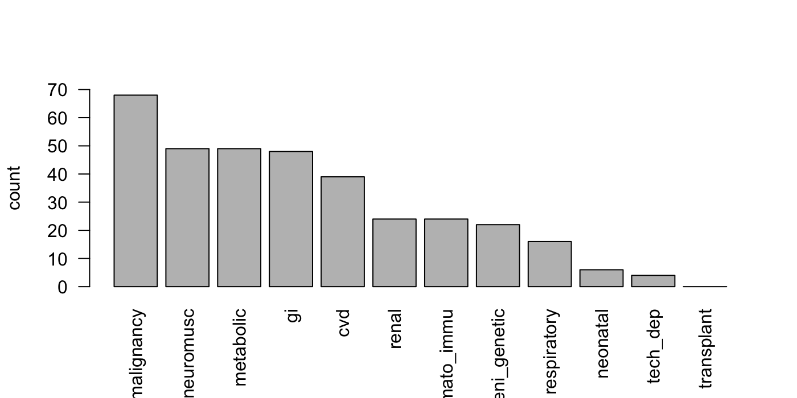

pccc.RmdThe adult comorbidities defined by authors such as Charlson, Quan and Elixhuaser are not suitable for pediatric research. Feudtner and others produced comorbidity definitions suitable for infants and children, with mappings defined for both ICD-9 and ICD-10 codes. These are now included in icd.
The PCCC comorbidities may be derived from both diagnostic and procedure codes. The following simulated data has both:
head(dat)## id icd_dx1 icd_dx2 icd_pcs1 icd_pcs2
## 1 10001 S32010B T422X3D 0SWJ37Z 00QS4ZZ
## 2 10002 D686 A42 0D124JB 03QB4ZZ
## 3 10003 S32021G M4806 2W03X6Z D91497Z
## 4 10004 S61320A T475X6A 03SP4ZZ 0BU207Z
## 5 10005 S054 S90222A 06104ZP B41D1ZZ
## 6 10006 M12232 V9209XS 0XRL07P 0PUM0JZThe data is in ‘wide’ format. Currently icd requires it be in ‘long’ format, which can be achieved as follows:
dx <- wide_to_long(dat[1:3])
pcs <- wide_to_long(dat[c(1, 4:5)], icd_name = "pcs", icd_regex = "icd_pcs")
head(dx)## id icd_code
## 1 10001 S32010B
## 2 10001 T422X3D
## 3 10002 D686
## 4 10002 A42
## 5 10003 S32021G
## 6 10003 M4806head(pcs)## id pcs
## 1 10001 0SWJ37Z
## 2 10001 00QS4ZZ
## 3 10002 0D124JB
## 4 10002 03QB4ZZ
## 5 10003 2W03X6Z
## 6 10003 D91497ZNow the PCCC comorbidity classes can be computed and summarized in a plot:
pccc_dx <- comorbid_pccc_dx(dx)
pccc_pcs <- icd10_comorbid_pccc_pcs(pcs,
visit_name = "id", icd_name = "pcs")
res <- pccc_dx | pccc_pcs